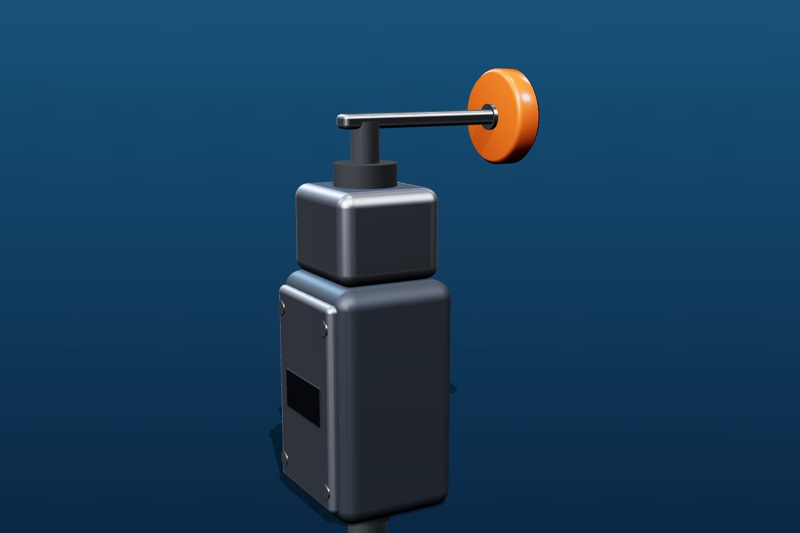

Limit switches
that know where it ends.
Rugged enclosed switches to detect end of travel, door position or part presence. Choose roller lever, roller plunger or adjustable rod actuator on one common body.
Specifications shown are design targets, not guaranteed ratings. Electrical ratings, life data, ingress protection and standards compliance are confirmed per variant after validation. Please ask before design-in.

Sensing · Position
Limit Switches
| Actuators | Roller lever, roller plunger, adjustable rod |
|---|---|
| Contacts | Snap-action 1NO + 1NC, positive-opening option |
| Enclosure | Die-cast or engineered plastic, gasketed cover |
| Entry | Cable gland / conduit thread (e.g. M20) |
| Sealing | IP65-class target (confirm per variant) |
| Ambient | Industrial range, to be specified per variant |
| Design reference | IEC 60947-5-1 |
Features
Designed for the shop floor
- Reversible lever head for either direction of approach
- Positive-opening contact option for safety interlocks
- Gasketed cover and sealed actuator shaft
- Press-formed and moulded parts made in-house
Typical applications
Where it is used
Machine doors and guardsConveyorsLifts and hoistsAssembly fixtures
Need a different actuator, terminal, colour or mounting? See custom switches.
Enquire about limit switches
Share load, voltage, operating force, mounting, expected volume and target date.